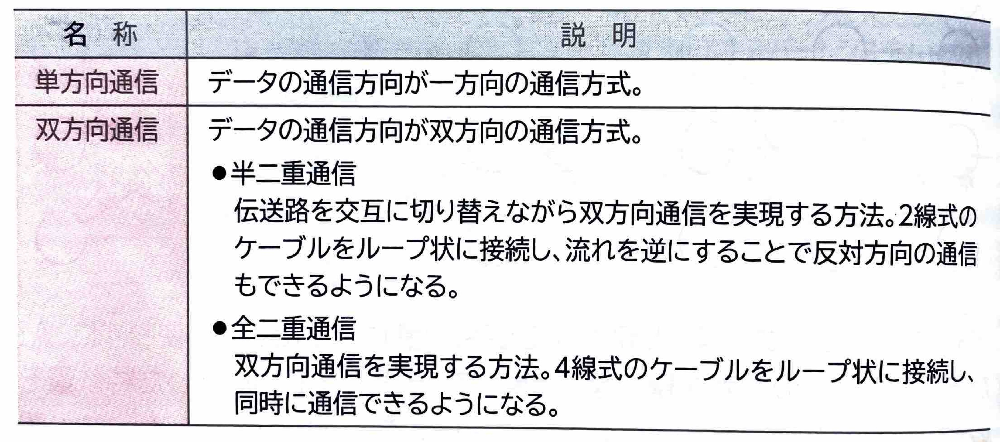
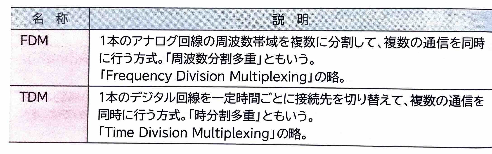
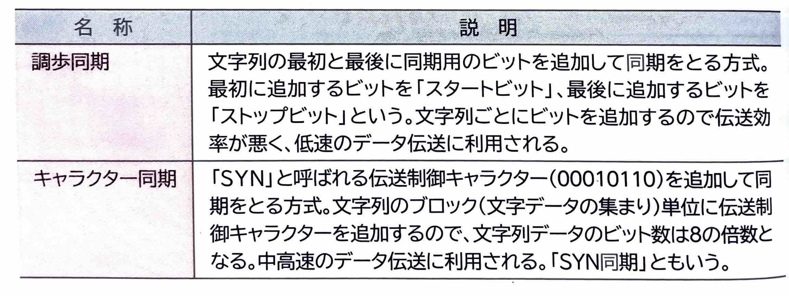
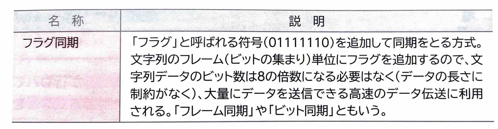
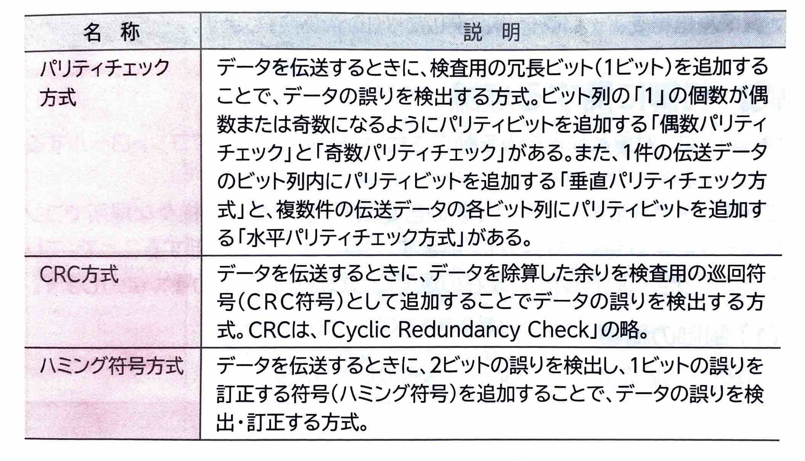
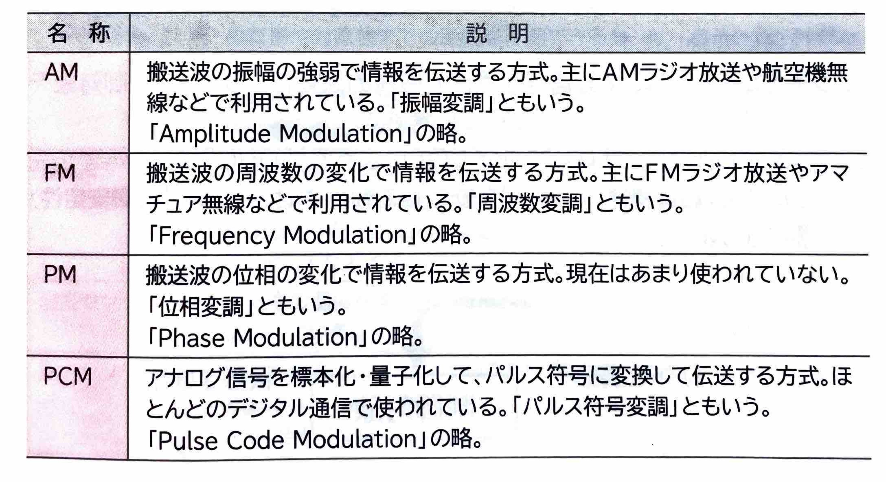

【 伝送理論 】
｢伝送理論｣とは、コンピュータで情報を伝送する技術や、伝送データの信頼性を高めるための技術に関する理論のことです。
(1)通信方法
コンピュータで情報を伝送する通信方式は、次のようなものがあります。

(2)多重化方式
｢多重化｣とは、1本の伝送路で、複数の通信を同士に行う技術のことです。
代表的な多重化方式には、次のようなものがあります。

(3)信号同期方式
｢信号同期｣とは、送信側と受信側でデータ送受信のタイミングを合わせることです。
代表的な信号同期方式には、次のようなものがあります。


(4)誤り制御方式
｢誤り制御｣とは、データを伝送するときに、データの誤りを検出したり、訂正したりする技術のことです。
代表的な誤り制御方式には、次のようなものがあります。

(5)変復調方式
デジタルデータをアナログの伝送路で伝送する場合、デジタルデータをアナログ信号に変換する処理が必要になります。この処理を｢変調｣といいます。
反対に、アナログ信号をデジタルデータに変換する処理のことを｢復調｣といいます。
代表的な変復調方式には、次のようなものがあります。
